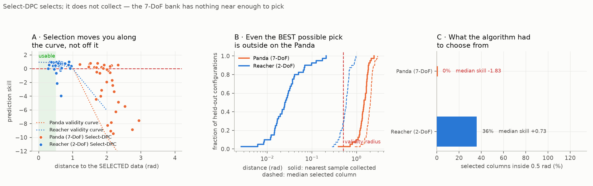

12. Select-DPC — and a 2-DoF arm to test it on¶
Decision¶
Add Reacher-v5 (Gymnasium's 2-link planar arm) as a third system, and
implement Select-DPC (Naef, Moffat, Eising & Dorfler,
arXiv:2503.18845) in core/selectdpc.py, with
panda/ and reacher/ as thin adapters.
Select-DPC replaces fixed local libraries with per-timestep column selection. On Reacher it is strictly better and cheaper than the anchor pipeline: 96/120 vs 84/120 reaches, at 4x less compute. On the Panda it improves every metric and remains unusable — which is the fourth independent confirmation that entry 11's coverage diagnosis is the binding constraint.
A fifth measurement, added afterwards, makes that last claim structural rather than empirical: the nearest of the Panda bank's 97,500 collected samples sits 1.48 rad from a typical episode start, against a 0.5 rad validity radius, so no selection rule — not this one, not Isomap, not an oracle — has anything near enough to pick. On Reacher the same number is 0.03 rad. Select-DPC selects; it does not collect.
Two results here contradict what the papers would lead you to expect, and one contradicts a claim made in this repo an hour earlier. All three are recorded below rather than quietly dropped.
Context — entry 11 left one problem and two candidate escapes¶
Entry 11 established that the Panda's DeePC libraries are excellent within ~0.5 rad of their data and anti-informative beyond ~2 rad, that the arm operates at ~2 rad, and that covering its configuration space at 0.5 rad costs ~10^5 trajectories. The controller was never the problem.
That left two escapes: tile denser (unaffordable), or stop tiling. Reacher exists to test the second at a budget where the first is also affordable, so the two can be separated.
Reacher removes four of the Panda's difficulties at once, and three are measured rather than assumed:
| Panda | Reacher |
|---|---|
| 4-D self-motion manifold; the tip does not observe the state | 2 joints drive a 2-D fingertip — no redundancy |
| gravity is a state-dependent affine term | planar, gravity perpendicular: u = 0 moves the joints by 0.0000 rad over 50 steps |
| PD position servo hides the real interface | gaintype=FIXED, biastype=NONE, gear=200 — direct torque |
| ~5.7 effective dimensions | 2-D configuration space; and q0 is an exact symmetry (measured 1.735e-16 m), so the dynamics depend on q1 alone |
That last one means the 6x5 = 30-anchor grid encodes only 5 distinct sets of
dynamics, each replicated at 6 base rotations — a 6x redundancy that anchoring
on q1 and rotating the fingertip block would remove. Untried.
Considered¶
My first Select-DPC was not Select-DPC¶
An earlier panda/selectdpc.py scored columns against the observed past and
solved once. Reading Algorithm 1 + 2 properly, the paper does neither:
- Selection is against
tau~, the open-loop prediction, over the full length-L trajectory(u_p, y_p, u_f, y_f)— the data chosen resembles where the controller intends to go. - It iterates: select, solve, re-select against the new prediction, until
convergence or
n_max. The paper likens this to SQP-MPC's sequential linearization.
Scoring on the past alone is closer to the Time-Windowed DeePC the paper uses as a baseline. So the "selection ties fixed libraries" null that version produced never tested this method, and is retracted. The corrected algorithm does measurably better on the same Panda bank (skill -2.28 -> -1.83, RMSE 197 -> 151 mm).
Lesson, twice learned today: implement from the algorithm box, not the abstract. The same mistake produced a wrong characterisation of DeePC-GS in entry 11's Considered section.
Where the code lives¶
core/selectdpc.py. The algorithm operates on Hankel blocks and knows nothing
about either robot; each system supplies its own (u, y) trajectories. The
alternative was two copies of a non-trivial loop, one of which was already wrong.
Naming follows the paper: n_cols is its N_cols (columns selected) and n_max
its iteration cap. These are separate design parameters and are easy to conflate.
SAFE_MARGIN is not portable¶
Copying the Panda's SAFE_MARGIN = 0.10 to Reacher made 14.7% of the task
impossible. The Panda trims joint ranges to keep excitation off a hard limit,
which would be a nonlinearity the local libraries must model. On Reacher that
reasoning inverts: joint1's limit is what lets the arm fold, and folding is what
reaches targets near the origin.
|q1| <= 2.40 (margin 0.10) -> reachable annulus [0.0767, 0.21] m
|q1| <= 2.88 (margin 0.02) -> [0.0291, 0.21] m
goals are drawn uniformly from a disc of radius 0.20
Four of twenty goals were physically unreachable before this was caught, so the
true rate was 14/16 = 87.5%, not 70%. reacher/model.py::reachable_annulus
exists to make that checkable rather than discoverable.
Outcome¶
The validity radius is ~0.5 rad on BOTH arms¶
scripts/verify_libraries.py (Panda) and scripts/run_reacher_deepc.py, skill vs
distance from the nearest data:
| radius | Panda (7-DoF, position servo) | Reacher (2-DoF, torque) |
|---|---|---|
| 0.00 | 0.93 | 0.94 |
| 0.50 | 0.72 | 0.84 |
| 1.00 | 0.14 | −0.02 |
| 2.00 | −9.93 | −6.06 |
Different actuation, different dimensionality, different gravity situation, same boundary. That is a far more general number than expected, and it is why the two systems' outcomes differ only through where they operate: Reacher's anchor spacing is 0.52 rad, the Panda's nearest data is 1.98 rad away.
Select-DPC on Reacher — better and cheaper¶
120 scenarios, early stopping OFF, Wilson 95% intervals
(scripts/eval_reacher_scenarios.py):
| controller | reach rate | best | final | steps | path/net | time |
|---|---|---|---|---|---|---|
| 30 fixed anchors | 84/120 [61–77%] | 4.3 mm | 8.9 mm | 21 | 1.6 | 22.0 m |
Select n_max=1 |
96/120 [72–86%] | 3.0 mm | 6.6 mm | 16 | 1.5 | 5.5 m |
Select n_max=3 |
96/120 [72–86%] | 2.8 mm | 6.3 mm | 18 | 1.6 | 16.0 m |
| random torque | 9/120 [4–14%] | 42.1 mm | 161.7 mm | 20 | 7.6 | — |
Paired against fixed anchors on best distance: n_max=1 closer on 70/120
(+0.8 mm median), n_max=3 on 78/120 (+1.9 mm). The Wilson intervals overlap
slightly, so the paired tests carry the claim, not the point estimates.
Iterating buys nothing — and past n_max=3 it hurts¶
scripts/sweep_select_dpc.py, 20 episodes:
n_max 1 2 3 5 8 (fixed anchors: 11/20, 331.9 ms)
reached 16 16 16 15 13
ms/step 76.7 163.7 221.4 344.8 504.4
iters 1.00 2.00 2.97 4.66 6.69
n_max = 1 is the best setting: the entire gain over fixed anchors comes from
selecting the right data, not from Algorithm 1's loop. The iters row explains
the decline — the tolerance only starts firing at n_max=5, so the loop mostly
runs to its cap, and with nothing pinning it the prediction drifts from the
measured state. Beyond n_max=3 it is strictly dominated: slower and worse.
The one thing iteration does buy is precision: n_max=3 converges 0.3 mm tighter
and wins more paired comparisons, at 3x the cost and no reach-rate gain.
The drift — found only by removing early stopping¶
Every run before this one stopped at first contact, so final recorded where the
tip was when it crossed the threshold, not where it settled. Running the full
horizon:
best -> final ratio
fixed 4.3 -> 8.9 2.1x
Select n_max=1 3.0 -> 6.6 2.2x
Select n_max=3 2.8 -> 6.3 2.3x
random 42.1 -> 161.7 3.8x
Every controller arrives at roughly half its final error and then backs off by
the same factor. The constancy is the tell: it is not a data or selection
problem but a property of the receding-horizon cost, which has no terminal term
and nothing rewarding station-keeping once tracking is nearly satisfied over the
horizon. docs/journey/06-stop-at-goal.md records the unicycle hitting this.
Consequence: every reach-rate number in this project flatters its controller — they touch the target and leave.
The Panda: coverage confirmed, from a fourth direction¶
scripts/run_select_dpc.py, gate on 40 held-out configurations drawn as the env
draws them:
| tip RMSE | skill | cos | cos<0 | |
|---|---|---|---|---|
| K=65 fixed | 246 mm | −4.73 | 0.23 | 45% |
| Select-DPC | 151 mm | −1.83 | 0.52 | 38% |
Select-DPC improves everything — direction quality more than doubles — and selection is working as designed (3 trajectories chosen from 65). It is still negative skill: worse than assuming the tip does not move. The nearest data sits 1.98 rad away against a ~0.5 rad validity radius, and no selection rule manufactures data that is not there.
scripts/plot_panda_coverage_argument.py assembles the four independent routes to
this conclusion into one figure.
Why selection cannot rescue a 7-DoF arm — the floor is 1.48 rad¶
The argument above had a hole. 1.98 rad is the distance to the nearest
anchor, and Select-DPC does not use anchors — it picks Hankel columns out of
a pooled bank, and collection trajectories wander away from their anchor under OU
excitation. So "1.98 rad from an anchor" never said how far the selected data
was. scripts/measure_selection_distance.py measures the thing the algorithm
actually reaches for: 40 held-out configurations per arm, drawn the way each env
draws its episode starts, N_cols = 300, stride 4, medians.

| Panda (7-DoF) | Reacher (2-DoF) | |
|---|---|---|
| collection | 97,500 samples → 24,115 columns / 65 trajectories | 36,000 → 8,880 / 30 |
| nearest anchor | 1.98 rad | 0.51 rad |
| nearest sample collected, anywhere | 1.48 rad | 0.03 rad |
| nearest bank column | 1.51 rad | 0.05 rad |
| median selected column | 2.01 rad | 0.58 rad |
| selected columns inside 0.5 rad | 0% | 36% |
| skill / cos | −1.83 / 0.52 | +0.73 / 0.92 |
| negative skill | 26/40 | 7/40 |
The Panda's nearest anchor, skill and cos rows reproduce entry 11 and the
gate table above exactly (1.98, −1.83, 0.52) on an independently written code
path, which is what makes the new rows worth trusting.
Four things this settles:
- The wandering is real but useless. Nearest anchor 1.98 rad, nearest actual sample 1.48 rad — collection does spread the data by ~0.5 rad, and that buys nothing against a 0.5 rad validity radius. Not one of the 300 columns Algorithm 2 selects lies inside it. Reacher puts 36% of its selection inside, and its skill is positive.
- The windowing convention does not matter. A column is a length-17 window,
not a point — on the Panda it traverses a median 0.58 rad — so locating it by
its first sample is a choice.
d_sample, the nearest of all 97,500 collected configurations with no windowing at all, gives 1.48 against the column figure's 1.51. The gap is 0.03 rad; nothing here rests on the convention. - It is not a data-volume problem. The Panda's bank holds 2.7× Reacher's
samples and is still ~50× further from what it needs. More trajectories of
the same kind only walk
r_Kdown the power law in panel B ofpanda_coverage_argument.png, which is why the count needed is ~10⁵. - The bound is on selection itself, not on this selection rule.
d_sampleis the floor: no rule can pick data that was never collected. Isomap embedding, a unit-corrected norm, a sweptN_cols, an oracle that picks the 300 genuinely best columns — every one of them still chooses from a set whose nearest member sits 3× outside the validity radius. That is a far stronger statement than "Select-DPC scored −1.83", and it is why the answer here is collection, not a better selector.
Panel A is the compact form: the two point clouds land on the same validity curve, in different places. Selection moves you along that curve; it cannot move the curve.
Three problems underneath the coverage one¶
Coverage is binding, so these are untested rather than refuted — but if collection were fixed tomorrow, Select-DPC on a 7-DoF arm would still face three things Reacher does not have:
ydoes not observe the state. The 4-D self-motion manifold makes(u_ini, y_ini)map one-to-many onto futures, violating what Willems' lemma needs from the past window.y = [q; p_ee]patches it, and that patch is the env adapter's doing, not the algorithm's — Select-DPC inherits the fix, it does not provide one.- A 289-dimensional trajectory space against Reacher's 102. Algorithm 2's plain Euclidean distance is exactly what the paper's Isomap variant exists to rescue at this dimension, and only the norm-based method is implemented here.
taumixes units —q_des(rad),q(rad) andp_ee(m) — so the tip block is weighted ~10× below the joint blocks and selection is driven almost entirely by joint-space geometry.tip_scaleexposes the correction and every number above uses the paper's plain norm.
Retractions¶
The Panda closed-loop comparison at 40 steps. All three controllers scored
0/10, which was reported as evidence they were equivalent. A DLS oracle on the
same scenarios reaches 1/12 at that budget: the episodes were near-infeasible,
so the run measured the step budget, not the controllers. scripts/run_select_dpc.py
now carries a DLS oracle row for exactly this reason — at 100 steps it reaches
8/10 with path/net 1.0, confirming the task is achievable there. The affected
figure panel has been rebuilt.
"Denser anchors will raise Reacher's reach rate." Predicted, then measured: 3.6x the anchors (30 -> 108, spacing 1.05 -> 0.52 rad) bought one extra reach, 13/20 -> 14/20, while the open-loop gate improved exactly as predicted. Prediction improving without reaching improving is a pattern worth distrusting on sight.
Caveats¶
N_colsis held at 300 throughout; the paper sweeps that axis (its Figure 3) and we have not.- Only norm-based selection is implemented. The paper's Isomap variant exists to
dodge the curse of dimensionality in the
(T_ini+N)(m+p)-dimensional trajectory space — 102 on Reacher, 289 on the Panda, where it matters more. taumixes units (torque, radians, metres).tip_scaleexposes a correction; every number here uses the paper's plain norm, which under-weights the Panda's tip block ~10x.- The selection-distance table is n = 40 configurations per arm, one seed, one
N_cols, one stride. The effects are 30x, not marginal, and the three rows that overlap prior runs reproduce them exactly — but it is not a confirmation run. The Reacher bank is also collected fresh each invocation (30 anchors x 1200 samples) rather than loaded, so its rows move slightly with--seed. - One unexplained non-determinism: episode 17 of the Reacher scan scored 19.8 mm in one code path and 184.8 mm in another on identical inputs. Order dependence, episode definition and metric seeding were each ruled out. No aggregate depends on it, but per-episode Reacher classifications should be treated as provisional.
Next¶
- A terminal cost or stop-at-goal term. The drift is universal and structural, and fixing it would lift every row rather than trading one against another.
N_colssweep, the one design parameter the paper tunes and we did not.- Exploit
q0symmetry on Reacher — 5 libraries instead of 30 — and the same trick for the Panda'sq1. - On-policy collection for the Panda — now the only item on this list that
can move the Panda at all. Cover the trajectories the controller actually
traverses rather than the configuration space: it attacks
d_sampledirectly, which is the quantity the section above shows every selection-side idea is bounded by. It is the one route to the coverage problem this project has not tried, and it is what the unicycle's clone -> residual pipeline does.